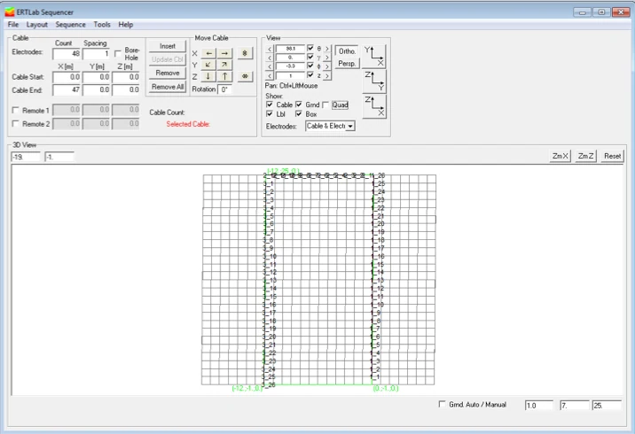
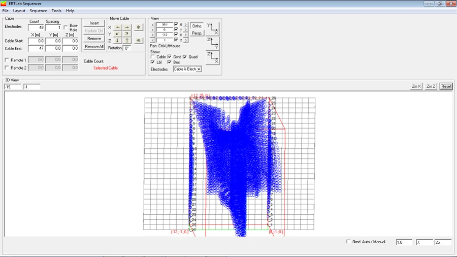
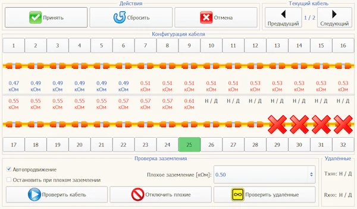
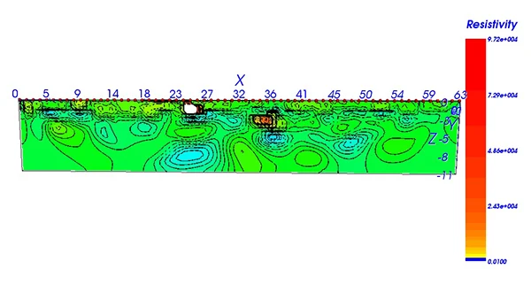

Измерения проводились на заднем дворе пансионата “Радуга”. Расстановка 64-х электродов была произведена в виде буквы “П”, расстояние между электродами 1м.
Схема расстановки электродов показана на рисунке.


Перед измерением была произведена проверка сопротивлений заземления электродов, в выпадающем меню «Плохое заземление [кОм]» можно выбрать величину сопротивления заземления, значения равные или более которой будут условно считаться неприемлемыми для работы.

После проверки сопротивлений заземления были проведены измерения по двум вариантам установок:
Шаблон первой установки был создан с помощью встроенного ПО аппаратуры и представлял собой двумерный разрез установкой Шлюмберже (724 измерения, время работы 1 минута 40 сек).

Второй шаблон был создан в программном модуле ERTLab Sequencer – трехмерная П-образная расстановка, включающая в себя диполь-дипольную и Шлюмберже (4600 измерений, время работы 8 минут). Генераторные и приемные диполи располагались на разных сегментах кабеля.
Результаты инверсии получены с помощью нотубука с 2-х ядерным процессором в течение 20-ти минут. По данным хорошо прослеживается аномалия низкого сопротивления (показана синим цветом), вероятнее всего связанная с инженерными коммуникациями.